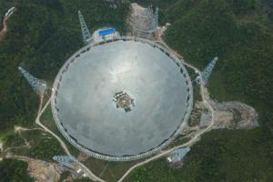
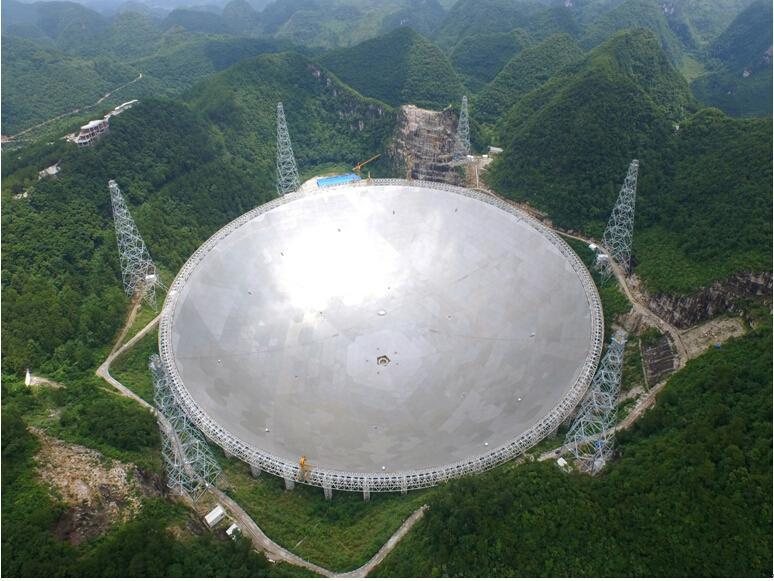

Five-hundredd-meter aperture spherical radio telescope is a radio telescope led by the national observatory of the Chinese academy of sciences. it is located in a karst depression in Pingtang county, Qiannan buyi and Miao autonomous prefecture, Guizhou province.
this equipment is the world's largest single-aperture and most sensitive radio telescope with China's independent intellectual property rights. it is known as "China's heavenly eye". It is mainly composed of active reflector system, feed support system, measurement and control system, receiver and terminal, and observation base.
In 1993, astronomers from 10 countries, including China, proposed to build a new generation of radio "big telescopes" at the International Radio Science Alliance conference in Tokyo. They expect to harvest more radio signals before the global electrical signal environment deteriorates beyond control. The motivation for building FAST began here.
in July 1994, the concept of FAST engineering was put forward. Under this background, the former Beijing Observatory proposed a Chinese plan to build Arecibo LT with KARST landform in southwest China, initially named Karst.
in November 1995, with Beijing observatory as the main body, more than 20 universities and scientific research institutions in the United States set up the "big radio telescope" China propulsion Committee, headed by researcher nan rendong.
in 2001, FAST pre-research was established as the first batch of "major innovative projects" of the Chinese academy of sciences and was supported by the Chinese academy of sciences and the Ministry of science and technology.
in October 2001, the first batch of major projects of the knowledge innovation project "FAST pre-research" received general acceptance.
in July 2007, the national development and reform Commission approved the proposal for the establishment of a major national science and technology infrastructure for the 500-meter spherical radio telescope, agreeing in principle to include the FAST project in the national high-tech industry development project plan, and the FAST project entered the feasibility study stage.
in October 2008, the national development and reform Commission approved the feasibility study report of the major national science and technology infrastructure project for the 500-meter spherical radio telescope, and the FAST project entered the preliminary design stage.
in February 2009, the preliminary estimate for the national major scientific and technological infrastructure of the 500-meter spherical radio telescope was approved by Guizhou provincial development and reform Commission.
in March 2011, the FAST project commencement report was approved, and the preliminary design and budget estimate of the project commencement project were approved by the Chinese academy of sciences and the Guizhou provincial people's government.
The project was officially started in March 2011 and is expected to be completed in September 2016 with a construction period of 5.5 years. The excavation of the telescope site was completed, and the construction of the base and the active reflector were all started in 2013. The estimated total investment is 667 million yuan.
on the morning of February 4, 2015, the 500m diameter spherical radio telescope (FAST) located in Pingtang, Guizhou province was installed with the last steel cable, and the cable net manufacturing and installation project was completed. This means that the construction of FAST's support frame has been completed and it has entered the stage of assembling reflector panels.
On the eve of the National Day in 2015, with the completion of the withstand voltage test and transformer substation equipment debugging of the 10kV high-voltage cable with a length of 3.5km, the comprehensive wiring project of the 500-meter-diameter spherical radio telescope (FAST) project of the National Observatory of the Chinese Academy of Sciences has been completed, with the power supply conditions in place. This marks the formation of the "heavenly eye" nervous system and the final sprint stage of the FAST project.
on November 21, 2015, the 500-meter diameter spherical radio telescope (FAST) feed support system installed and constructed in southern Guizhou province was tested for the first time. six steel cables pulled the feed cabin up to 108 meters and carried out the corresponding functional tests.
on March 8, 2016, the 500m spherical radio telescope (FAST), the world's largest single-aperture radio telescope built in Pingtang county, Guizhou province, has completed the installation of 3492 reflector panels, accounting for 78.47%. On April 10, 2016, the 500-meter spherical radio telescope (FAST) completed the installation of 4,185 reflector panels, accounting for 94.04%.
on June 29, 2016, FAST completed the installation of 4443 reflector panels, accounting for 99.8%.
on July 3, 2016, the last reflector unit of the 500-meter spherical radio telescope was successfully hoisted, which marked the successful completion of the FAST main project.
on September 25, 2016, it was completed and opened in the karst depression in Pingtang county, Guizhou province, and began to receive electromagnetic waves from the depths of the universe. the "heavenly eye" will become a "silent area" within 5 kilometers.
in October 2017, two new pulsars were discovered, which are about 4100 light-years and 16000 light-years away from the earth respectively. this is the first time that pulsars have been discovered by Chinese radio telescopes.
in December 2017, FAST discovered 3 new pulsars, and these 3 pulsars have been respectively certified.
since its inauguration on September 25, 2016, 51 pulsar candidates have been discovered in China's celestial eye, of which 11 have been confirmed as new pulsars.
on April 28, 2018, we learned from the national observatory of the Chinese academy of sciences that the "celestial eye" FAST(500-meter spherical radio telescope) discovered millisecond pulsars for the first time and obtained international certification. The newly discovered pulsar J0318+0253 has a rotation period of 5.19 milliseconds and is estimated to be about 4,000 light-years away from the earth according to dispersion. It was discovered by FAST using an ultra-wideband receiver for one-hour tracking observation. It is one of the high-energy millisecond pulsars with the weakest radio flux found so far.
on July 12, 2018, the Guizhou provincial science and technology award conference learned that 43 pulsars had been discovered by the 500-meter spherical radio telescope.
on September 12, 2018, 59 high-quality pulsar candidates have been discovered by the 500-meter spherical radio telescope, of which 44 have been confirmed as newly discovered pulsars.
in 2019, the 500-meter spherical radio telescope was accepted by the state and began to search for aliens.
from may 2019, "Guizhou province radio management regulations" will come into force. The "Regulations" set up a special chapter for the protection of FAST, which is another new measure to protect FAST in Guizhou. The "Regulations" consists of six chapters and 50 articles, of which the third chapter is dedicated to FAST protection. In order to ensure the electromagnetic environment necessary for the normal operation of FAST, the Regulations delimit the electromagnetic quiet zone of radio telescopes, which consists of a core zone, a middle zone and a remote zone. With the radio telescope site as the center of the circle, the area with a radius of 5 kilometers is the core area, the annulus with a radius of 5 to 10 kilometers is the middle area, and the annulus with a radius of 10 to 30 kilometers is the remote area. The "Regulations" clearly state that the establishment and use of radio stations are prohibited in the core area, the construction of projects that have electromagnetic environmental impact on radio telescopes and facilities that radiate radio waves are prohibited, and the construction of buildings (structures) is prohibited. The original residents shall all move out and be properly resettled. At the same time, it is forbidden to bring mobile phones, digital cameras, tablet computers, unmanned aerial vehicles and other electronic products that generate electromagnetic radiation into the core area. Irrelevant vehicles are not allowed to enter the core area.
